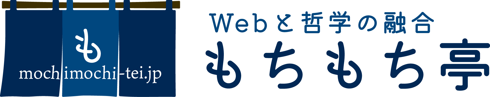

斧渕勇輝 — インフラ・バックエンドエンジニア
| 名前 | 斧渕 勇輝（おのぶち ゆうき） |
|---|---|
| 屋号 | もちもち亭 |
| 居住地 | 兵庫県姫路市 |
| 本業 | 株式会社EPOCH-NET — インフラ・バックエンドエンジニア（テックリード） |
| 副業 | 個人事業主としてITベンチャー案件参画（Python中心のバックエンド・インフラ業務） |
| 学歴 | 創価大学文学部人間学科（哲学・歴史学メジャー）卒業 |
| コミュニティ | FediLUG（Fediverse Linux Users Group）設立・運営 |
Mastodon・Misskeyのアカウントで使える匿名質問箱サービス。Mastodon/Misskeyでのログイン、投稿機能、DM通知に対応しています。
fediqb.y-zu.org →医療・教育・学術系団体向けシステムの設計・開発・運用に従事。
ITベンチャー企業の案件に個人事業主として参画し、Pythonを中心としたバックエンド・インフラ業務を担当。
業務のご相談・お問い合わせはこちらからどうぞ。
Python・インフラ・Fediverseに関するご相談であればなんでもお聞かせください。